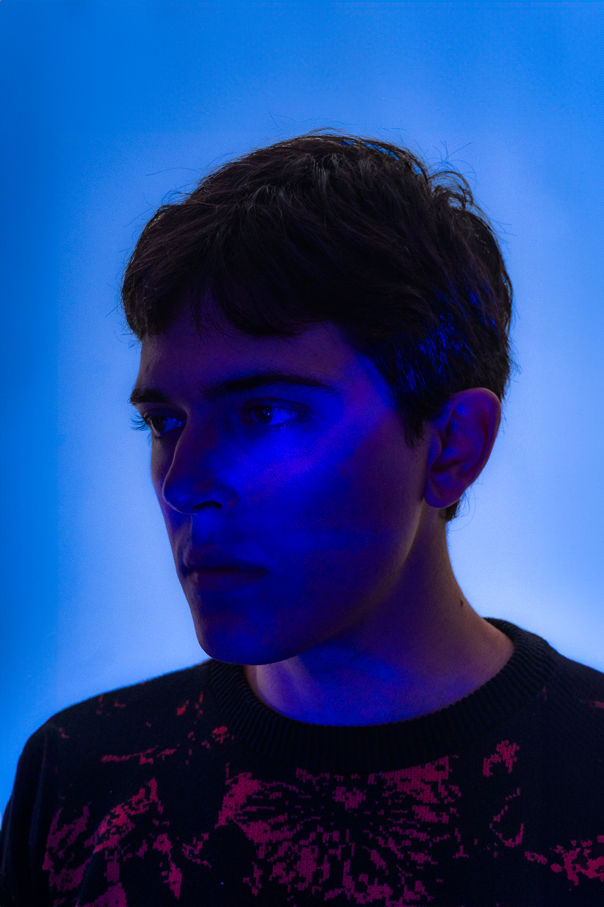
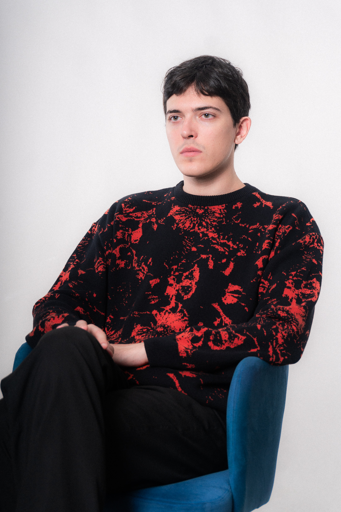
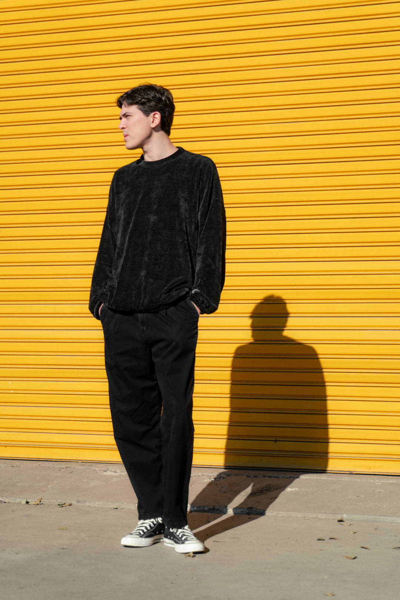

BIOGRAFÍA
Fabricio Mosoni es un DJ y productor nacido en Córdoba, Argentina.
Desde pequeño ha demostrado una enorme pasión por la música, comenzando clases de batería a los 6 años en el conservatorio de su ciudad.
Tiempo después ampliaría sus horizontes estudiando guitarra y saxofón.
A los 18 años descubre el mundo de la música electrónica. Influenciado por sonidos profundos y melódicos, decide empezar a crear su propias producciones.
En los últimos años se ha dedicado por completo a pulir y profundizar su impronta sonora, siempre en la búsqueda constante de nuevas paletas de sonidos y atmósferas.


